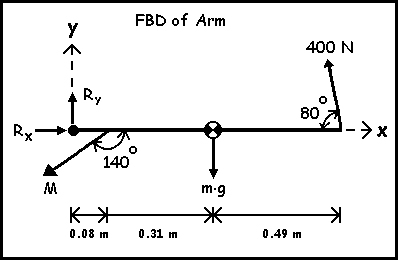
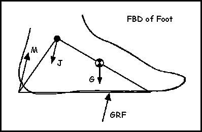

Static Equilibrium of Rigid Bodies (2-D)
Examples of FBDs:.
Often, the rigid body can be drawn as a straight line. This is the case when all of the forces can be drawn such that the point of application of each force intersects with a straight line. The right arm of the gymnast can be modelled this way. Notice that the dimensions and external forces are known. Since the magnitudes of the internal forces are not known, letters are used instead of numbers.

Other times, the rigid body is best represented by a simple shape. This is the case when all points of application of the forces cannot be shown to intersect with a straight line. The FBD of the foot is a good example of this because the points of application of the ground reaction force (GRF), joint force (J) and gravity force (G), etc. are best connected with a triangle.